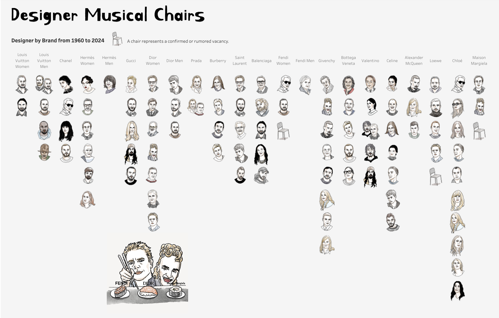
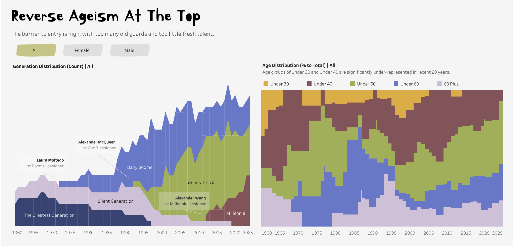

Concept & Data
While I’ve read countless articles about the comings and goings of luxury designers, I’ve rarely seen a publication that brings all the information together. That’s why I decided to manually gather the data and present it in an aggregated format—organized by fashion house and timeline. I traced back to 1960s, the early days of the ready-to-wear fashion market, and 22 luxury brands that I think most representative of the industry.

Chart Considerations
I used waffle charts, bar charts, and area charts to illustrate the demographic shifts, as I believe they present the information in the clearest and most straightforward way.

Design
I hand-drew the headshots and small vignettes scattered throughout the visualization to give it a more humanistic touch.Luxe Designer Musical Chair Tracker
Data Viz
Recent designer shakeups have dominated fashion headlines, with insiders remarking that creative director tenures seem shorter than ever. But is that really the case? In this IIB Award longlisted visualization, I analyzed eight decades of data on designer appointments and career movements to uncover whether there have been meaningful shifts in both designer demographics and tenure length.
Charts I built:
- Sigmoid Curved Bump Chart
- Waffle Chart
- Area Chart